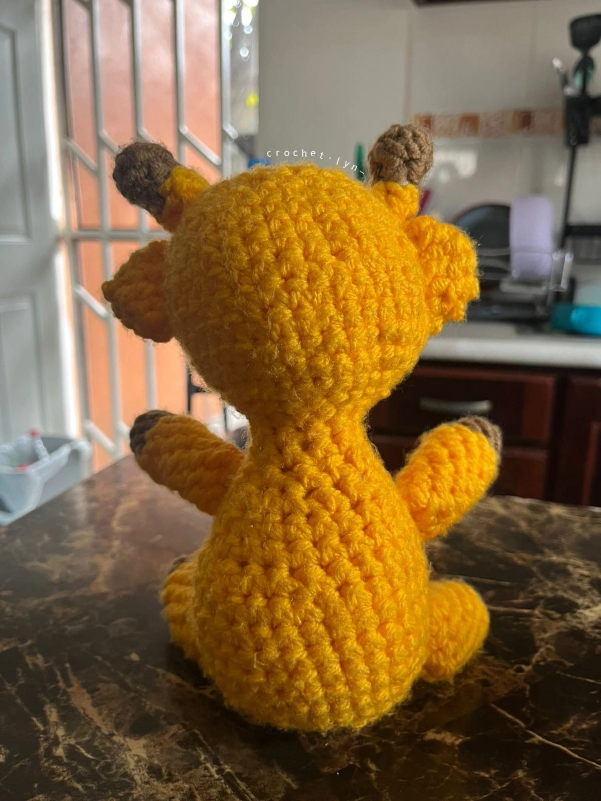
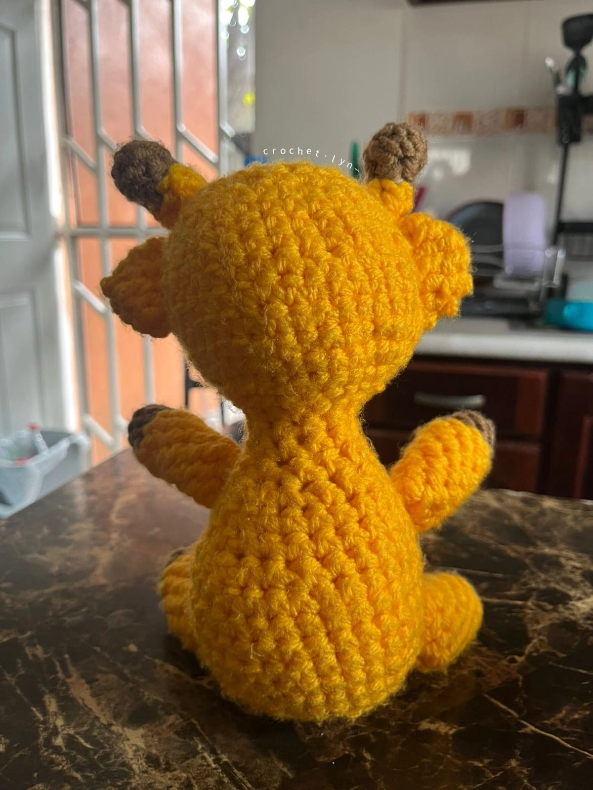

¡Bienvenidos a Crochet!
En esta sección encontrarás todo lo que necesitas para aprender a tejer a crochet. Desde tutoriales, hasta patrones y tips para que puedas hacer tus propias creaciones.
¿Qué es el crochet?
El crochet es una técnica de tejido que se realiza con una aguja especial llamada ganchillo. Con esta técnica se pueden hacer todo tipo de prendas y accesorios, desde gorros y bufandas, hasta bolsos y mantas.
¿Cómo aprender a tejer a crochet?
Para aprender a tejer a crochet, lo primero que necesitas es una aguja de ganchillo y un ovillo de lana. Luego, puedes buscar tutoriales en internet o en libros especializados para aprender los puntos básicos y las técnicas más comunes.
¿Qué se puede hacer con crochet?
Con la técnica de crochet se pueden hacer todo tipo de prendas y accesorios, como gorros, bufandas, guantes, calcetines, bolsos, mantas, cojines, entre otros. También se pueden hacer amigurumis, que son muñecos tejidos a crochet.
¿Dónde comprar materiales de crochet?
Los materiales de crochet, como las agujas de ganchillo y los ovillos de lana, se pueden comprar en tiendas especializadas en manualidades y labores, así como en tiendas online. También se pueden encontrar en mercerías y tiendas de lanas.


 
